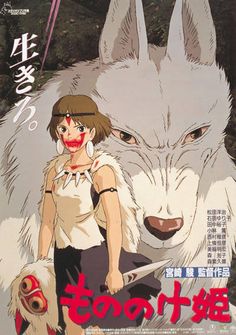

HOME

Princess Mononoke
《幽灵公主》
(1997)
《魔法公主》是由吉卜力工作室制作，宫崎骏执导。在1997年7月12日首映的日本动画电影。《幽灵公主》讲述在幻想的室町时代里，虾夷族的少年为了保护族人遭到邪魔的诅咒，为了找出一切的起源与解开诅咒的方法离开自己的家园后介入一场人类与森林神祇两方的冲突事件，也被卷入森林动物神灵、邪魔和人类之间生存搏斗的战争，少年在途中邂逅由狼神扶养成人的少女并试找出能化解动物神灵与人类的冲突纷争的故事。
《幽灵公主》上映后，使吉卜力达到新的里程碑。电影所累积的票房成绩是吉卜力在此之前最卖座的动画《红猪》数倍以上并曾一度是日本电影史上票房榜首，直到被西洋片《泰坦尼克号》及2001年由吉卜力出品的《千与千寻》等超越。《幽灵公主》也使吉卜力开始与美国华特迪士尼公司接触合作从而进军国际市场的机会，吉卜力除了让华特迪士尼旗下米拉麦克斯影业负责在北美上映的事务外，并授权给华特迪士尼在全球发行过去《天空之城》、《龙猫》等吉卜力动画的影音产品。